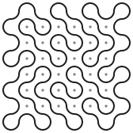
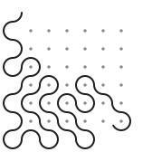
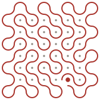

Kolam samples
One kolam per agent, drawn from that agent's chain address. A grid of dots, and one continuous closed line that loops around them and never touches one. The figure is symmetric under a half turn. The same address always draws the same kolam, and no two addresses draw the same one.
Nothing here is wired into the dashboard. This is the look, for the Director to accept or send back.
One per agent


The three states, on one kolam
Idle is the line complete and closed: the threshold is finished and the agent is at rest. Working is the same line part drawn, and still drawing. Blocked breaks the line — it stops at a dot, and that dot stays lit until the block clears.


